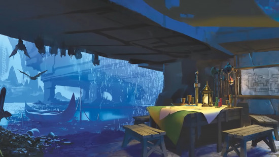

Trasfondos de Dungeons & Dragons

Artesano
Ability Scores: Strength, Dexterity, Intelligence
Feat: Crafter
Skill Proficiencies: Investigation and Persuasion
Tool Proficiency: Choose one kind of Artisan’s Tools
Equipment: Choose A or B: (A) Artisan's Tools (same as above), 2 Pouches, Traveler’s Clothes, 32 GP; or (B) 50 GP
Feat: Crafter
Skill Proficiencies: Investigation and Persuasion
Tool Proficiency: Choose one kind of Artisan’s Tools
Equipment: Choose A or B: (A) Artisan's Tools (same as above), 2 Pouches, Traveler’s Clothes, 32 GP; or (B) 50 GP
You began mopping floors and scrubbing counters in an artisan’s workshop
for a few coppers per day as soon as you were strong enough to carry a bucket. When you were
old enough to
apprentice, you learned to create basic crafts of your own, as well as how to sweet-talk the
occasional demanding customer. Your trade has also given you a keen eye for detail.

Charlatán
Ability Scores: Dexterity, Constitution, Charisma
Feat: Habilidoso
Skill Proficiencies: Deception and Sleight of Hand
Tool Proficiency: Forgery Kit
Equipment: Choose A or B: (A) Forgery Kit, Costume, Fine Clothes, 15 GP; or (B) 50 GP
Feat: Habilidoso
Skill Proficiencies: Deception and Sleight of Hand
Tool Proficiency: Forgery Kit
Equipment: Choose A or B: (A) Forgery Kit, Costume, Fine Clothes, 15 GP; or (B) 50 GP
Once you were old enough to order an ale, you soon had a
favorite stool in every tavern within ten miles of where you were born. As you traveled the
circuit from public house to watering hole, you learned to prey on unfortunates who were in
the market for a comforting lie or two—perhaps a sham potion or forged ancestry records.

Criminal
Ability Scores: Dexterity, Constitution, Intelligence
Feat: Alerta
Skill Proficiencies: Sleight of Hand and Stealth
Tool Proficiency: Thieves’s Tools
Equipment: Choose A or B: (A) 2 Daggers, Thieves' Tools, Crowbar, 2 Pouches, Traveler's Clothes, 16 GP; or (B) 50 GP
Feat: Alerta
Skill Proficiencies: Sleight of Hand and Stealth
Tool Proficiency: Thieves’s Tools
Equipment: Choose A or B: (A) 2 Daggers, Thieves' Tools, Crowbar, 2 Pouches, Traveler's Clothes, 16 GP; or (B) 50 GP
You eked out a living in dark alleyways, cutting purses or
burgling shops. Perhaps you were part of a small gang of like-minded wrongdoers who looked
out for each other. Or maybe you were a lone wolf, fending for yourself against the local
thieves' guild and more fearsome lawbreakers.

Granjero
Ability Scores: Strength, Constitution, Wisdom
Feat: Duro
Skill Proficiencies: Animal Handling and Nature
Tool Proficiency: Carpenter’s Tools
Equipment: Choose A or B: (A) Sickle, Carpenter's Tools, Healer's Kit, Iron Pot, Shovel, Traveler's Clothes, 30 GP; or (B) 50 GP
Feat: Duro
Skill Proficiencies: Animal Handling and Nature
Tool Proficiency: Carpenter’s Tools
Equipment: Choose A or B: (A) Sickle, Carpenter's Tools, Healer's Kit, Iron Pot, Shovel, Traveler's Clothes, 30 GP; or (B) 50 GP
You grew up close to the land. Years tending animals and
cultivating the earth rewarded you with patience and good health. You have a keen
appreciation for nature’s bounty alongside a healthy respect for nature's wrath.

Guardia
Ability Scores: Strength, Intelligence, Wisdom
Feat: Alerta
Skill Proficiencies: Athletics and Perception
Tool Proficiency: Choose one kind of Gaming Set
Equipment: Choose A or B: (A) Spear, Light Crossbow, 20 Bolts, Gaming Set (same as above), Hooded Lantern, Manacles, Quiver, Traveler’s Clothes, 12 GP; or (B) 50 GP
Feat: Alerta
Skill Proficiencies: Athletics and Perception
Tool Proficiency: Choose one kind of Gaming Set
Equipment: Choose A or B: (A) Spear, Light Crossbow, 20 Bolts, Gaming Set (same as above), Hooded Lantern, Manacles, Quiver, Traveler’s Clothes, 12 GP; or (B) 50 GP
Your feet ache when you remember the countless hours you
spent at your post in the tower. You were trained to keep one eye looking outside the wall,
watching for marauders sweeping from the nearby forest, and your other eye looking inside
the wall, searching for cutpurses and troublemakers.

Hermitaño
Ability Scores: Constitution, Wisdom, Charisma
Feat: Curandero
Skill Proficiencies: Medicine and Religion
Tool Proficiency: Herbalism Kit
Equipment: Choose A or B: (A) Quarterstaff, Herbalism Kit, Bedroll, Book (philosophy), Lamp, Oil (3 flasks), Traveler's Clothes, 16 GP; or (B) 50 GP
Feat: Curandero
Skill Proficiencies: Medicine and Religion
Tool Proficiency: Herbalism Kit
Equipment: Choose A or B: (A) Quarterstaff, Herbalism Kit, Bedroll, Book (philosophy), Lamp, Oil (3 flasks), Traveler's Clothes, 16 GP; or (B) 50 GP
You spent your early years secluded in a hut or monastery
located well beyond the outskirts of the nearest settlement. In those days, your only
companions were the creatures of the forest and those who would occasionally visit to bring
news of the outside world and supplies. The solitude allowed you to spend many hours
pondering the mysteries of creation.

Noble
Ability Scores: Strength, Intelligence, Charisma
Feat: Habilidoso
Skill Proficiencies: History and Persuasion
Tool Proficiency: Choose one kind of Gaming Set
Equipment: Choose A or B: (A) AGaming Set (same as above), Fine Clothes, Perfume, 29 GP; or (B) 50 GP
Feat: Habilidoso
Skill Proficiencies: History and Persuasion
Tool Proficiency: Choose one kind of Gaming Set
Equipment: Choose A or B: (A) AGaming Set (same as above), Fine Clothes, Perfume, 29 GP; or (B) 50 GP
You were raised in a castle, surrounded by wealth, power,
and privilege. Your family of minor aristocrats ensured that you received a first-class
education, some of which you appreciated and some of which you resented. Your time in the
castle, especially the many hours you spent observing your family at court, also taught you
a great deal about leadership.

Sabio
Ability Scores: Constitution, Intelligence, Wisdom
Feat: Iniciado en la Magia
Skill Proficiencies: Arcana and History
Tool Proficiency: Calligrapher's Supplies
Equipment: Choose A or B: (A) Quarterstaff, Calligrapher's Supplies, Book (history), Parchment (8 sheets), Robe, 8 GP; or (B) 50 GP
Feat: Iniciado en la Magia
Skill Proficiencies: Arcana and History
Tool Proficiency: Calligrapher's Supplies
Equipment: Choose A or B: (A) Quarterstaff, Calligrapher's Supplies, Book (history), Parchment (8 sheets), Robe, 8 GP; or (B) 50 GP
You spent your formative years traveling between manors and
monasteries, performing various odd jobs and services in exchange for access to their
libraries. You whiled away many a long evening studying books and scrolls, learning the lore
of the multiverse - even the rudiments of magic - and your mind yearns for more.

Marinero
Ability Scores: Strength, Dexterity, Wisdom
Feat: Matón de Taberna
Skill Proficiencies: Acrobatics and Perception
Tool Proficiency: Navigator's Tools
Equipment: Choose A or B: (A) Dagger, Navigator's Tools, Rope, Traveler's Clothes, 20 GP; or (B) 50 GP
Feat: Matón de Taberna
Skill Proficiencies: Acrobatics and Perception
Tool Proficiency: Navigator's Tools
Equipment: Choose A or B: (A) Dagger, Navigator's Tools, Rope, Traveler's Clothes, 20 GP; or (B) 50 GP
You lived as a seafarer, wind at your back and decks swaying
beneath your feet. You've perched on barstools in more ports of call than you can remember,
faced mighty storms, and swapped stories with folk who live beneath the waves.

Soldado
Ability Scores: Strength, Dexterity, Constitution
Feat: Atacante Salvaje
Skill Proficiencies: Athletics and Intimidation
Tool Proficiency: Choose one kind of Gaming Set
Equipment: Choose A or B: (A) Spear, Shortbow, 20 Arrows, Gaming Set (same as above), Healer's Kit, Quiver, Traveler’s Clothes, 14 GP; or (B) 50 GP
Feat: Atacante Salvaje
Skill Proficiencies: Athletics and Intimidation
Tool Proficiency: Choose one kind of Gaming Set
Equipment: Choose A or B: (A) Spear, Shortbow, 20 Arrows, Gaming Set (same as above), Healer's Kit, Quiver, Traveler’s Clothes, 14 GP; or (B) 50 GP
You began training for war as soon as you reached adulthood
and carry precious few memories of life before you took up arms. Battle is in your blood.
Sometimes you catch yourself reflexively performing the basic fighting exercises you learned
first. Eventually, you put that training to use on the battlefield, protecting the realm by
waging war.